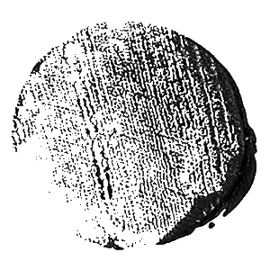
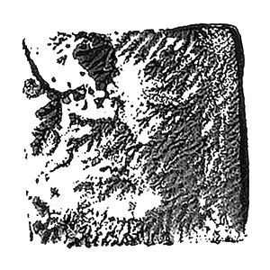
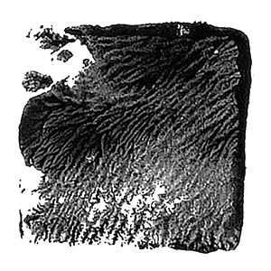
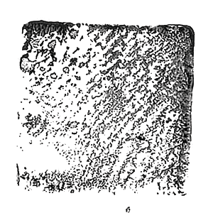
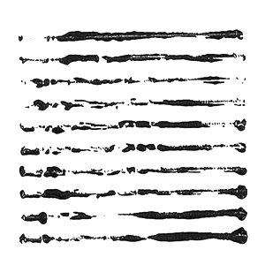
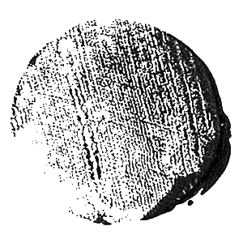
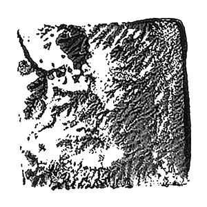
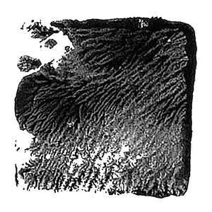
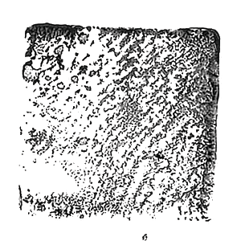
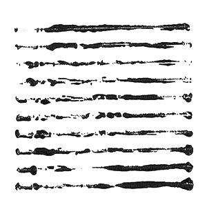

의미 없음의 의미 展
-- exhibition planning
-- graphic design
-- poster / leaflet design
카지미르 말레비치의 사각형은 시대별로 흑색기, 채색기, 백색기로 구분된다. 이는 곧 절대주의의 세 시기이며, 흑색기는 절대주의 회화의 시작이다. 전시는 이러한 시대별 흐름과 맥락을 따라 구성한다. 말레비치에 이르러 회화는 재현을 벗어난 순수표현에 이르게 된다. 회화가 아무것도 의미하지 않을 때 스스로의 존재이유를 가지는 역설. 즉, 의미없음의 의미가 되는 것이다.
 









workshop
1913년부터 19년까지 말레비치는 흑백과 하얀 바탕위에 붓으로 만들어낸 자국을 이용해 그림을 그렸다. 기초 기하학적 형체 중에서도 순수하다고 여겼던 것은 사각형이었다. 추상적인 기하학적 요소인 사각형, 삼각형, 원으로 이루어진 어린이 나무 쌓기 블럭에 검은색 물감을 발라 흰 종이에 찍었다. 단일색상에서 느껴지는 질감과 농도를 느낄 수 있도록 물감의 양과 찍는 횟수를 조절하며 작업을 진행했다.
poster
말레비치는 완전한 극한의 추상적인 형태, 철저하게 비재현적인 자신의 회화유형을 ‘절대주의’라고 명했다. 포스터 역시 배경 위에 여러 개의 기하학적 형태들을 배치하는 형식으로 구성했다.
leaflet
접이 형태의 리플렛이다. 앞 면은 전시 기조에 대한 설명을, 뒷 면은 최소한의 글자만 사용하여 그래픽 워크샵의 결과물을 배치했다.